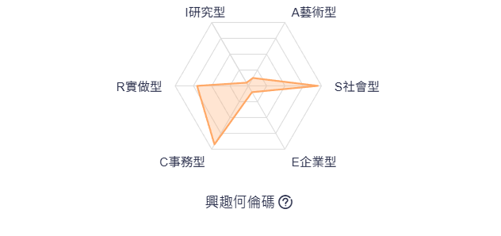

嗨，我是 Ian！
歡迎來到我的個人網站。
姓名:陳嘉恩
系級:資管二A
學號:411220405
經歷
- 2021-23 高中籃球校隊副隊長
- 2024 資管系學會資訊長
- 2025 系籃副隊長
興趣與專長
- 運動
- 旅行
- 看電影

我的興趣何倫碼結果
會替別人著想的友善小天使，關心並理解他人感受。為人自律有禮貌，處事仔細精確，按部就班。喜歡在一個組織福利良好的機構中，從事服務、教育訓練等與人相關的工
理想公司職務與工作需求
- 職務名稱：領隊
- 主要技能：帶團、行銷應用、領隊帶團技巧，需具備的證照為 國際領隊
- 工作性質：協助處理旅客在出國及回國時會碰到的手續，接洽當地導遊
選擇這份工作的原因
我熱愛與人互動，喜歡幫助他人解決問題並創造美好的回憶。
領隊這個職務不僅能發揮我的溝通與領導能力，還能讓我在多元文化中成長。
我希望透過這份工作拓展視野，累積實務經驗，並持續提升自己各方面的能力。